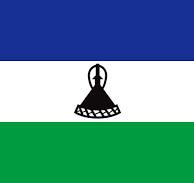
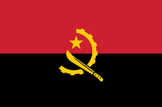
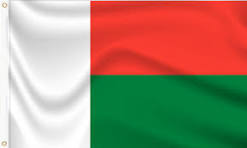
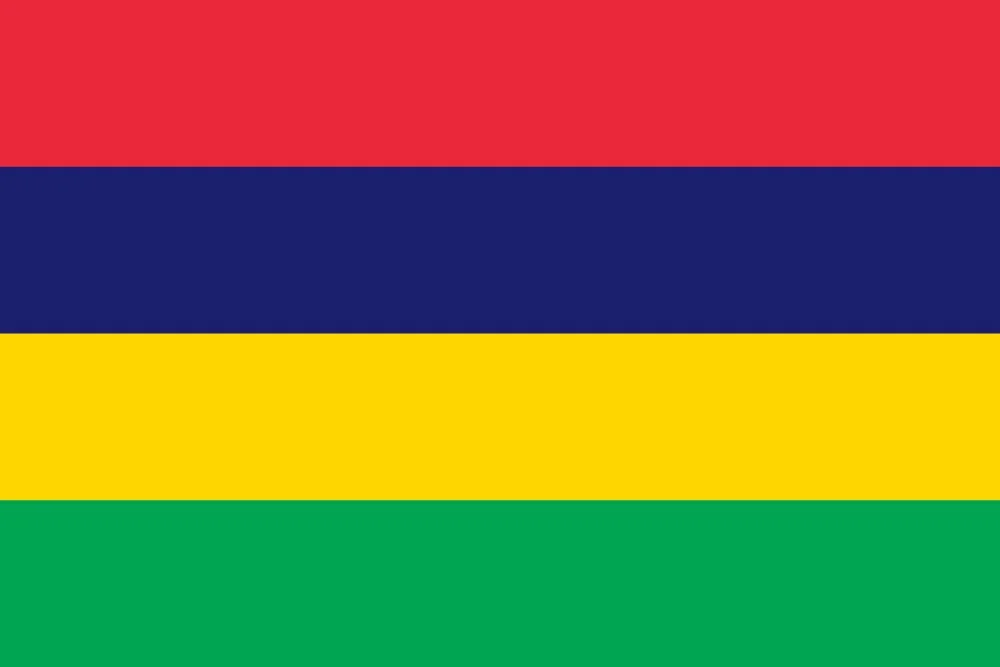

Day 7: Exploring Southern Africa
Introduction to Southern Africa
Southern Africa is a diverse region known for its deserts, grasslands, and breathtaking landscapes. It's home to iconic wildlife like lions, elephants, and rhinos.
How Many Countries in Southern Africa?
There are 16 countries in Southern Africa. Some of them include South Africa, Botswana, and Zimbabwe.
What is the Biggest Country in Southern Africa?
South Africa is the largest country in Southern Africa by both area and population. It's known for its cultural diversity and economic strength.
Main Touristic Areas in Southern Africa
- Kruger National Park (South Africa): Famous for its wildlife safaris and beautiful landscapes.

Kruger National Park is one of Africa's largest game reserves, offering a chance to see the Big Five: lions, leopards, rhinos, elephants, and buffalo.
- Victoria Falls (Zambia/Zimbabwe): One of the largest and most famous waterfalls in the world.
Victoria Falls, also known as "The Smoke That Thunders," is a UNESCO World Heritage site and a natural wonder of the world.

- Okavango Delta (Botswana): A unique inland delta that attracts wildlife and tourists.
The Okavango Delta is a vast and unique ecosystem, providing a haven for wildlife and offering stunning landscapes and boat safaris.

- Namib Desert (Namibia): One of the oldest deserts with unique landscapes and wildlife.
The Namib Desert is famous for its towering sand dunes, some of the highest in the world, and its stark, otherworldly beauty.

Countries, Their Flags, and Capital Cities in Southern Africa
| Country | Flag | Capital City |
|---|---|---|
| South Africa |  |
Pretoria, Cape Town, Bloemfontein |
| Botswana |  |
Gaborone |
| Zimbabwe |  |
Harare |
| Zambia |  |
Lusaka |
| Namibia |  |
Windhoek |
| Lesotho |  | Maseru |
| Eswatini (Swaziland) |  |
Mbabane |
| Angola |  | Luanda |
| Mozambique |  |
Maputo |
| Malawi |  |
Lilongwe |
| Madagascar |  | Antananarivo |
| Mauritius |  | Port Louis |
| Seychelles |  |
Victoria |
| Democratic Republic of the Congo |  |
Kinshasa |
| Tanzania |  |
Dodoma |
| Comoros |  |
Moroni |
Did you know? Tanzania is a member of both the Southern African Development Community (SADC) and the East African Community (EAC), due to its unique geographical position connecting the two regions.
Culture and Languages
Southern Africa has diverse cultures influenced by indigenous traditions and colonial histories. Languages spoken include English, Afrikaans, and local languages like Zulu and Shona.
South Africa
Culture
South Africa is known as the "Rainbow Nation" due to its multicultural diversity. It has 11 official languages, including Zulu, Xhosa, and Afrikaans.
Main Attractions
Table Mountain: A flat-topped mountain forming a prominent landmark overlooking the city of Cape Town.
Robben Island: The island where Nelson Mandela was imprisoned for 18 of his 27 years in jail. It's now a museum and UNESCO World Heritage site.
Kruger National Park: One of Africa's largest game reserves, offering a chance to see the Big Five.
South Africa's wine regions in the Western Cape are among the best in the world, producing globally recognized wines.
Botswana
Culture
Botswana is known for its rich cultural heritage, especially the traditional music and dance of the Tswana people. The country has a strong tradition of preserving its cultural practices.
Main Attractions
Okavango Delta: A UNESCO World Heritage site and one of the world's largest inland deltas, offering unique wildlife experiences.
Chobe National Park: Known for its large elephant population and boat safaris on the Chobe River.
Makgadikgadi Pans: One of the largest salt flats in the world, offering unique landscapes and wildlife during the wet season.
Botswana is considered one of Africa's most stable and economically prosperous countries, with a strong focus on conservation.
Zimbabwe

Culture
Zimbabwe has a rich cultural history, with influences from the Shona and Ndebele people. The country is known for its traditional music, art, and stone sculptures.
Main Attractions
Victoria Falls: One of the most famous waterfalls in the world, shared with Zambia.
Great Zimbabwe Ruins: The remains of an ancient city, offering a glimpse into the region's historical significance.
Hwange National Park: Known for its large elephant herds and diverse wildlife.
Zimbabwe is home to one of the Seven Natural Wonders of the World, Victoria Falls, which is a major tourist attraction.
Namibia

Culture
Namibia's culture is a mix of indigenous traditions and colonial influences, with significant contributions from the Himba and Herero people.
Main Attractions
Sossusvlei: Famous for its high red dunes and salt pans, located in the Namib Desert.
Etosha National Park: One of Africa's greatest wildlife parks, known for its salt pan and diverse animal species.
Fish River Canyon: The second largest canyon in the world, offering stunning views and hiking opportunities.
Namibia is one of the least densely populated countries in the world, offering vast landscapes and untouched wilderness.
Angola
Culture
Angola's culture is heavily influenced by Portuguese colonial history, with a vibrant music scene known for genres like semba and kizomba.
Main Attractions
Kissama National Park: A protected area known for its diverse wildlife and successful animal rehabilitation programs.
Kalandula Falls: One of the largest waterfalls in Africa, located in the Malanje province.
Fortress of São Miguel: A historic fort in Luanda, offering insights into Angola's colonial past.
Angola has one of the fastest growing economies in Africa, driven by its oil and diamond industries.
Mozambique
Culture
Mozambique's culture is a blend of African, Arab, and Portuguese influences, evident in its music, dance, and cuisine.
Main Attractions
Bazaruto Archipelago: A group of islands known for their pristine beaches, coral reefs, and marine life.
Gorongosa National Park: A national park known for its biodiversity and conservation efforts.
Island of Mozambique: A UNESCO World Heritage site with historic buildings and a rich cultural heritage.
Mozambique's coastline stretches for over 2,500 km, offering some of the best diving and snorkeling spots in the world.
Malawi

Culture
Malawi is known for its friendly people, earning it the nickname "The Warm Heart of Africa." The culture is centered around traditional music, dance, and art.
Main Attractions
Lake Malawi: Africa's third largest lake, known for its clear waters, sandy beaches, and diverse fish species.
Mount Mulanje: A large granite massif offering hiking opportunities and stunning views.
Liwonde National Park: A popular park for wildlife safaris, especially known for its elephant and hippo populations.
Lake Malawi is home to more species of fish than any other lake in the world, making it a biodiversity hotspot.
Madagascar

Culture
Madagascar's culture is a unique blend of African, Asian, and French influences, with strong ties to traditional Malagasy customs and beliefs.
Main Attractions
Avenue of the Baobabs: A famous road lined with towering baobab trees, a symbol of Madagascar's unique flora.
Ranomafana National Park: A rainforest park known for its rich biodiversity, including several species of lemurs.
Tsingy de Bemaraha: A UNESCO World Heritage site featuring unique limestone formations and a variety of endemic species.
Madagascar is home to about 5% of the world's plant and animal species, most of which are found nowhere else on Earth.
Tanzania

Culture
Tanzania is known for its diverse cultural heritage, with influences from the Swahili coast, Arab traders, and various ethnic groups like the Maasai and Chaga.
Main Attractions
Serengeti National Park: Famous for the annual migration of over a million wildebeest and thousands of zebras.
Mount Kilimanjaro: Africa's highest mountain, a popular destination for trekking and mountaineering.
Zanzibar: An archipelago known for its historic Stone Town, pristine beaches, and spice plantations.
Tanzania is a member of both the Southern African Development Community (SADC) and the East African Community (EAC), reflecting its geographical and political significance in the region.
Democratic Republic of the Congo (DRC)
Culture
The DRC is culturally rich, with over 200 ethnic groups. It is known for its vibrant music scene, particularly the Congolese rumba, and its diverse traditions and languages.
Main Attractions
Virunga National Park: Africa's oldest national park, home to mountain gorillas, active volcanoes, and diverse wildlife.
Kinshasa: The bustling capital city, known for its lively music and art scene.
Lake Kivu: A large lake offering stunning views and opportunities for water activities, shared with Rwanda.
The DRC is incredibly rich in natural resources, including minerals like cobalt and diamonds, which play a significant role in the global economy.
Comoros

Culture
Comoros has a unique blend of African, Arab, and French cultural influences. The islands are known for their traditional music, dance, and vibrant festivals.
Main Attractions
Mount Karthala: An active volcano and the highest point in Comoros, offering hiking opportunities and breathtaking views.
Moheli Marine Park: A marine park known for its coral reefs, sea turtles, and diverse marine life.
Chomoni Beach: A pristine beach with white sand and clear waters, popular for relaxation and water activities.
Note: Comoros is one of the world's largest producers of ylang-ylang, a key ingredient in many perfumes.